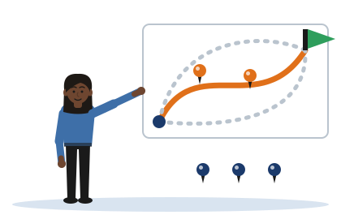

Five Pins
[Illustrative example - do not cite] Kavindu is an invented student, and the wrong choices offered for each pin are invented too.
A research question is a topic with five things pinned: technique, threat, environment, metric and baseline. Each pin removes projects that the question could have meant.

This tool does not read, judge or mark what you type. In the second part it only counts how many pins you have filled. A filled pin is not always a good pin: compare yours with Kavindu's.
Kavindu's weak question
His topic is . Many different projects could answer the question above. On the map, each line is one of those projects, and the flag is the topic.
The question so far
Set the five pins
For each pin, choose the wording that names one exact thing. You can set the pins in any order.
Pin your own topic
Write your topic, then fill each pin with one exact thing. Use Kavindu's five pins as your model.
Your pins, side by side
When all five are filled, write them as one question and test it in the Research Question Self-Check.
What you type here stays on this device. It is never sent anywhere.